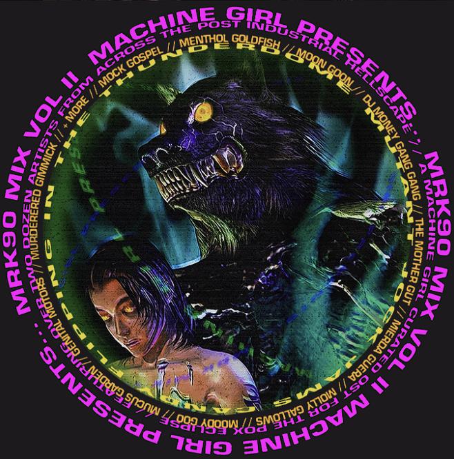

my inspirations
Some artists that inspire me are Froyo Tam (a multidisciplinary graphic designer), Machine Girl (a digital hardcore duo), and DV-i (hypermedia musician).
Back in 2019, I discovered the Y2K Aesthetic Institute on Twitter and I got obsessed with designs from the 2000s era. I discovered that page through a game I played called Crossniq, a Y2K futurism inspired puzzle game. Froyo Tam is one of the enthusiastic archivists for the Twitter page and I fell in love with her portfolio once I got to look over her Twitter page. She then went on to make great things such as being the logo designer for Cacti, Travis Scott's hard seltzer brand. Seeing her growth inspired me to take the path of a Viscom major.
DV-i was also an artist I discovered through Crossniq, and she contributed to the soundtrack of the successor of the game called Crossniq+. DV-i's music and themes are futurism centric. She also creates 3D art and visualizers for her music which is definitely impressive. She clearly has a strong design statement throughout her works and she inspires me to have some strong design statements in my personal work.

Lastly, but definitely not least, Machine Girl has been my favorite artist since 2019 and although their work are not similar to the other two artists I mentioned, their music, album artwork, and their music videos are experimental, vibrant, and glitchy which I absolutely enjoy. These themes inspire me to go beyond the boundaries for future designs.